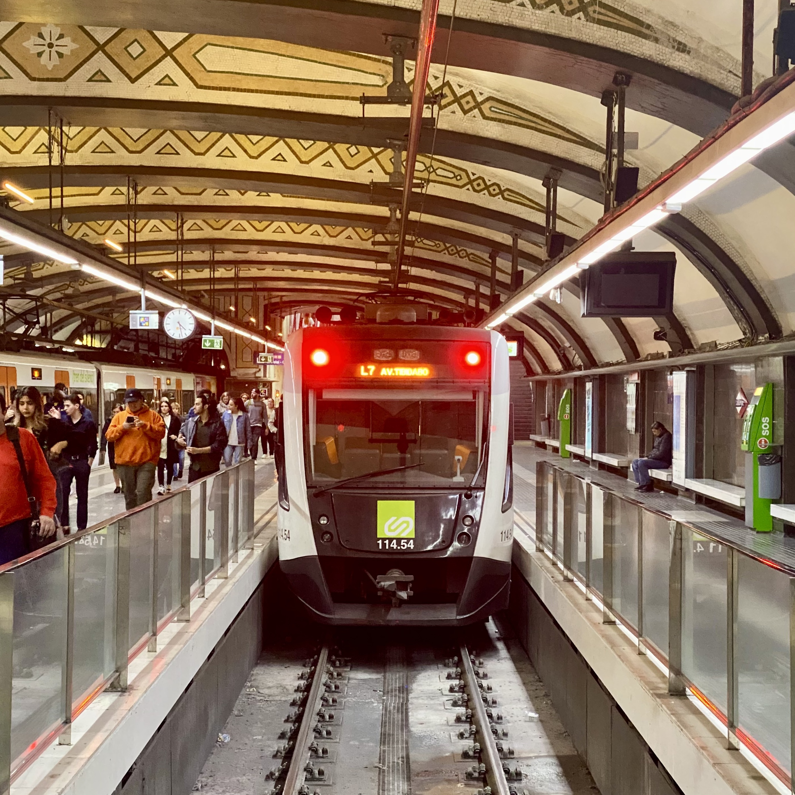
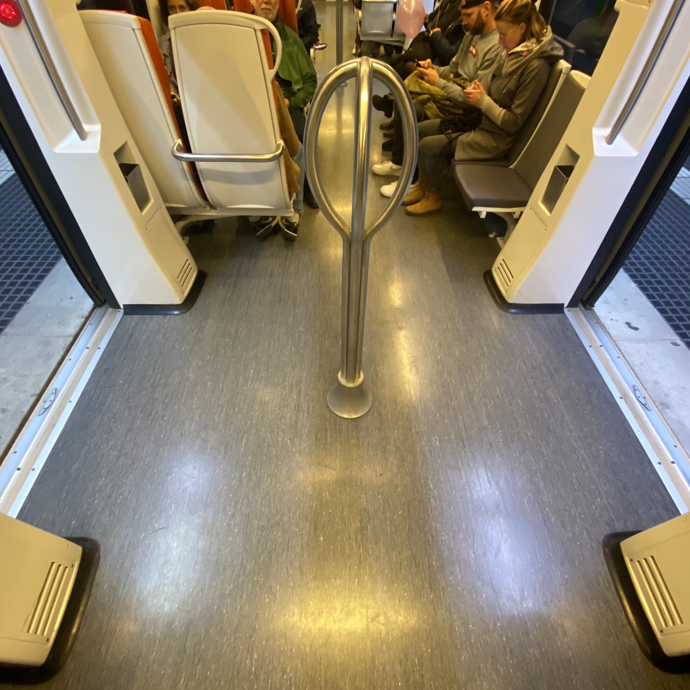

🇪🇸 Spanish Solution


🇺🇸
59th Street–Columbus Circle
🇺🇸
145th Street
🇺🇸
149th Street–Grand Concourse
🇨🇴
Acevedo
🇧🇪
Anneessens
🇪🇸
Avenida de América
🇪🇸
Avinguda Tibidabo
🇬🇧
Barking
🇧🇪
Bourse
🇲🇽
Chabacano
🇺🇸
Chambers Street
🇫🇷
Charles de Gaulle–Étoile
🇲🇽
Ciudad Azteca
🇪🇸
Clot
🇲🇽
Constitución de 1917
🇲🇽
Cuatro Caminos
🇧🇪
De Brouckère
🇺🇸
East 180th Street
🇪🇸
Elgoibar
🇨🇴
La Estrella
🇲🇽
El Rosario
🇪🇸
Fabra i Puig
🇺🇸
Flushing–Main Street
🇧🇪
Gare du Midi
🇺🇸
Hicksville
🇺🇸
Hoboken
🇺🇸
Hoyt–Schermerhorn
🇪🇸
Ibarbengoa
🇲🇽
Indios Verdes
🇺🇸
Jamaica
🇬🇧
King William Street
🇸🇪
Liljeholmen
🇲🇽
Pantitlán
🇺🇸
Park Street
🇷🇺
Partizanskaya
🇺🇸
Pelham Bay Park
🇪🇸
Plaça de Catalunya
🇧🇪
Rogier
🇸🇪
Ropsten
🇨🇴
San Antonio
🇪🇸
Sant Andreu
🇸🇪
Satra
🇦🇹
Stadion
🇬🇧
Stratford
🇲🇽
Tláhuac
🇲🇽
Universidad
🇸🇪
Vällingby
🇺🇸
Van Cortlandt Park–242nd Street
🇺🇸
Wakefield–241st Street
🇺🇸
Woodlawn
🇺🇸
World Trade Center
🇲🇽
Xochimilco
🇬🇷
Athens Airport
🇪🇸
Campamento
🇪🇸
Carabanchel
🇧🇷
General Osório
🇩🇪
Karlsplatz
🇨🇦
Kennedy
🇩🇪
Marienplatz
🇦🇺
Olympic Park
🇧🇷
Palmeiras Barrafunda
🇦🇷
Retiro
{kind=link}
{kind=link}